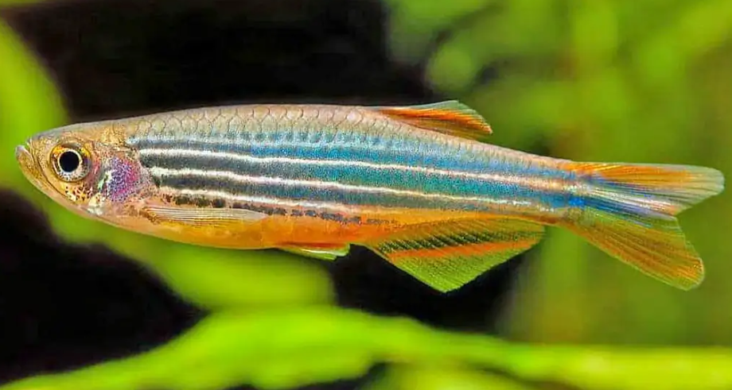
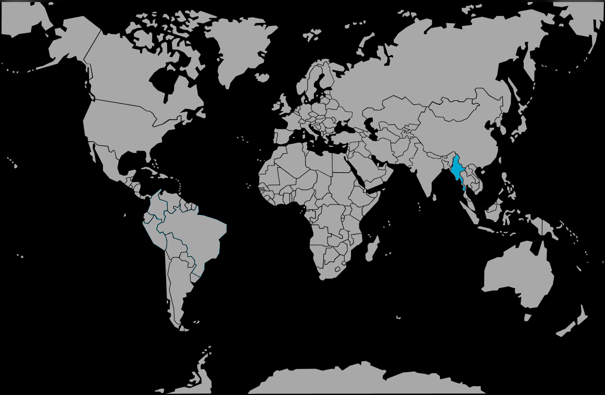

Systématique
- Ordre : Cypriniformes
- Famille : Danionidae
- Genre : Danio
- Espèce : D. quagga

Danio quagga est une espèce décrite scientifiquement en 2009 (Kullander, Liao & Fang). Il tire son nom du Quagga (Equus quagga quagga), une sous-espèce de zèbre aujourd'hui éteinte, en référence à son motif de coloration particulier.
Il mesure adulte entre 4 et 5 cm. Morphologiquement très proche de Danio kyathit et Danio nigrofasciatus, il s'en distingue par son patron de coloration. Il arbore une série de barres verticales sombres et bleutées sur le tiers antérieur du corps, qui se transforment en une bande longitudinale vers le pédoncule caudal, le tout sur un fond clair argenté à doré.
Souvent importé accidentellement avec d'autres Danios birmans, il reste moins fréquent dans le commerce aquariophile spécialisé.
C'est un poisson grégaire, vif et dynamique. Il doit être maintenu en banc d'au moins 8 individus pour limiter le stress.
Très actif, il nage principalement dans la partie supérieure et médiane de l'aquarium. Il est pacifique avec les autres espèces, mais sa vivacité peut déranger les poissons trop calmes ou à longs voiles. C'est un excellent sauteur qui nécessite un aquarium bien couvert.
Mode : ovipare.
La reproduction suit le modèle classique des Danios : c'est un diffuseur d'œufs. Les œufs non adhésifs sont dispersés au-dessus du substrat ou des plantes. Il n'y a pas de soins parentaux, et les adultes mangent leurs propres œufs. La reproduction est stimulée par un apport de nourriture vivante et une eau légèrement plus fraîche.
Dimorphisme sexuel : Les femelles sont sensiblement plus rondes au niveau de l'abdomen, surtout lorsqu'elles sont gravides. Les mâles sont plus élancés et peuvent présenter des couleurs un peu plus soutenues.
Espérance de vie : Estimée entre 3 et 5 ans en captivité.
Il est originaire du Myanmar (Birmanie), spécifiquement du bassin de la rivière Chindwin, principal affluent de l'Irrawaddy. Il fréquente les cours d'eau à courant modéré à rapide, souvent avec un fond rocheux ou graveleux, typique des zones de collines.
Répartition

Origine naturelle :
- Asie du Sud-Est.
- Myanmar (Birmanie).
- Bassin de la rivière Chindwin.
Paramètres de maintenance
Température : 20 à 26 °C (préfère les eaux légèrement fraîches).
pH : 6,5 à 7,5.
GH : 5 à 15 °dGH.
Courant : Modéré à fort. Une bonne oxygénation est requise.
Volume conseillé : Minimum 80 à 100 L. Il a besoin d'une bonne longueur de nage (80 cm de façade minimum) pour s'exprimer.
Régime alimentaire
Régime : omnivore à tendance insectivore.
Dans la nature, il capture de petits insectes et larves portés par le courant.
En aquarium, il accepte les paillettes et granulés, mais une alimentation variée incluant du vivant ou du congelé (daphnies, artémias, larves de moustiques) est essentielle pour sa santé et ses couleurs.